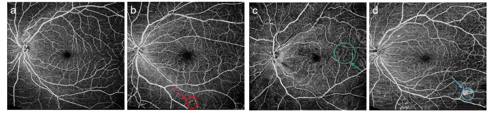

Diabetic retinopathy is the leading cause of blindness in the working-age population of the developed world. It is estimated to affect over 93 million people.
The US Center for Disease Control and Prevention estimates that 29.1 million people in the US have diabetes and the World Health Organization estimates that 347 million people have the disease worldwide. Diabetic Retinopathy (DR) is an eye disease associated with long-standing diabetes. Around 40% to 45% of Americans with diabetes have some stage of the disease. Progression to vision impairment can be slowed or averted if DR is detected in time, however this can be difficult as the disease often shows few symptoms until it is too late to provide effective treatment.
Currently, detecting DR is a time-consuming and manual process that requires a trained clinician to examine and evaluate digital fundus photographs of the retina. By the time human readers submit their reviews, often a day or two later, the delayed results lead to lost follow up, miscommunication, and delayed treatment.
Clinicians can identify DR by the presence of lesions associated with the vascular abnormalities caused by the disease. While this approach is effective, its resource demands are high. The expertise and equipment required are often lacking in areas where the rate of diabetes in local populations is high and DR detection is most needed. As the number of individuals with diabetes continues to grow, the infrastructure needed to prevent blindness due to DR will become even more insufficient.
The need for a comprehensive and automated method of DR screening has long been recognized, and previous efforts have made good progress using image classification, pattern recognition, and machine learning.
288 diabetic patients and 97 healthy people were imaged by the swept-source optical coherence tomography (SS-OCT) with 12 mm × 12 mm single scan centered on
the fovea. A multi-branch convolutional neural network (CNN) was proposed to classify WF-OCTA images
into four grades: no DR, mild non-proliferative diabetic retinopathy (NPDR), moderate to severe NPDR,
and proliferative diabetic retinopathy (PDR). A clinician has rated the presence of diabetic retinopathy in each image on a scale of 0 to 4, according to the following scale:
0 - No DR
1 - Mild
2 - Moderate
3 - Severe
4 - Proliferative DR
